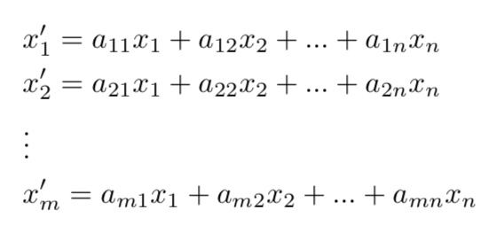
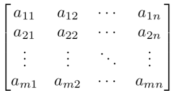
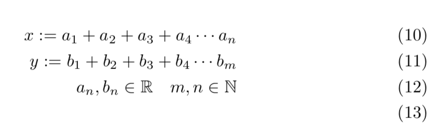
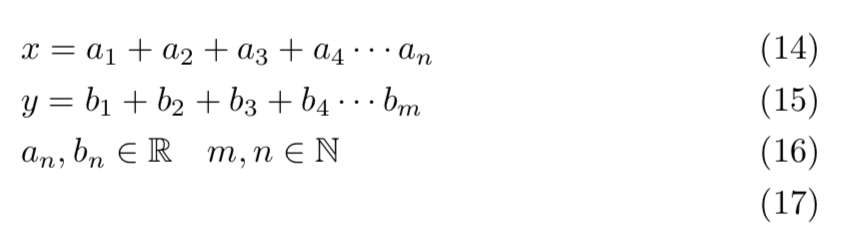
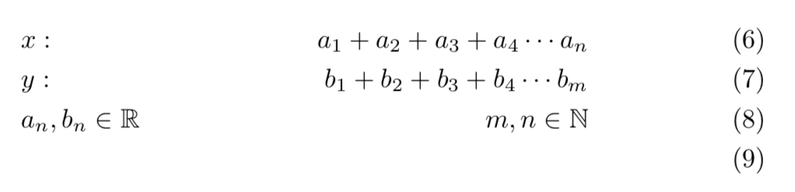
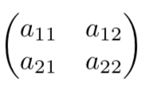
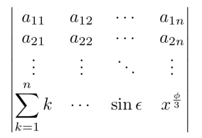
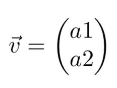

In general any linear transformation can be represented using matrices in the following way:


This said, i won't explain the math behind matrices any further and i will go on now with the Latex code necessary to replicate both the linear transformation and the matrix above.
For starting i will assume that the basics of latex mathematical enviroment are known (if this isn't the case, the reader is invited to read this first), and therefore they won't be re-explained here.
Let's start with the linear transformation:
If the page about the basics has been read it should be clear how to write
each of the expressions, but there still are two problem to solve,
how to make a break line inside the math enviroment and how to align the
3 expressions. Both problems are solved with the align enviroment given by
amsmath. This enviroment is somewhat similar to a table, therefore
I also invite the reader to read the table section of this page before
reading this section. ( here )
The symbol \\ indicates that the current row ended and the & symbol indicates the
point of alignment in each row. That means to take the carachter just
after as beginning of the alignment. They might also be multiples point of
alignementI will now make an example to clarify:
\begin{align}
ax= a_1 +a_2+a_3+a_4\cdots a_n\\
y=b_1 + b_2 +b_3+b_4\cdots b_m\\
a_n,b_n\in\mathbb{b}\quad m,n\in\mathbb{N}\\
\end{align}
This will result in three unaligned expressions, since we didn't put & to express where we want the alignment.

\begin{align}
&x= a_1 +a_2+a_3+a_4\cdots a_n\\
&y=b_1 + b_2 +b_3+b_4\cdots b_m\\
&a_n,b_n\in\mathbb{b}\quad m,n\in\mathbb{N}\\
\end{align}
This one will align them by x for the first row, y for the second and a_n for the third. 
\begin{align*}
&x: & a_1 +a_2+a_3+a_4\cdots a_n\\
&y: &b_1 + b_2 +b_3+b_4\cdots b_m\\
&a_n,b_n\in\mathbb{R} & m,n\in\mathbb{N}\\
\end{align*}
This last one will have 2 alignment, the first will be the same as for above, and the second alignment will be for a_1 in the first row, b_1 in the second and m,n in the third. 
To remove the numbers that appear to the very right a * must be added after align both in the \begin and \end. \begin{align*}
\end{align*}
The reader should now notice clearly the similarity between this enviroment and a table.
To sum up the important concepts:
To align multiple expressions to 1 or multiple points the following code is necessary.
\begin{align}
0-th field (if any) & first field to align &second field to align...& n-th field to align\\
0-th field (if any) & first field to align &second field to align...&b-th field to align\\
...
\end{align}
And 0-th field (if any) & first field to align &second field to align...& n-th field to align\\
0-th field (if any) & first field to align &second field to align...&b-th field to align\\
...
\end{align}
\begin{align*}...\end{align*}
is needed to remove the number that count
the corrent expression.
Matrix
Let's discuss now how to make a matrix just like the one in the beginning.
example:We saw that the align enviroment share some similarities with the tables, this said matrices are almost identical to tables. In fact the \\ indicates the end of a row and the & symbols indicates that end of the element of that coloumn in that row. It is also worth noting that three different parenthesis can be made for the matrices. Let's make an example to clarify:
\begin{pmatrix}
a_{11}&a_{12}\\
a_{21}&a_{22}}\\
\end{pmatrix}
Here pmatrix indicates that we want round parenthesis, the end result will be.

Of corse the members of the matrix can be any symbol or expression:
\begin{vmatrix}
a_{11}&a_{12}&\cdots&a_{1n}\\
a_{21}&a_{22}&\cdots&a_{2n}\\
\vdots &\vdots& \ddots&\vdots\\
\displaystyle\sum_{k=1}^n k&\cdots& \sin\epsilon&x^{\frac{\phi}{3}}\\
\end{vmatrix}
That will give the following matrix that since it is a vmatrix will have vertical parenthesis.

To obtain square brackets bmatrix must be used.
To sum up the important concepts
To make a matrix with square brackets:
\begin{bmatrix}...\end{bmatrix}
To make a matrix with round brackets:
\begin{pmatrix}...\end{pmatrix}
To make a matrix with vertical brackets:
\begin{vmatrix}...\end{vmatrix}
To make a matrix with no brackets:
\begin{matrix}...\end{matrix}
And matrix, similarly to tables, follow the form:
\begin{matrix}
firstrow first element & firstrow second element & ...firstrow n-th element\\
2-ndrow first element & 2-ndrow second element & ...2-ndrow n-th element\\
...
m-throw first element & m-throw second element & ...m-throw n-th element\\
\end{matrix}
firstrow first element & firstrow second element & ...firstrow n-th element\\
2-ndrow first element & 2-ndrow second element & ...2-ndrow n-th element\\
...
m-throw first element & m-throw second element & ...m-throw n-th element\\
\end{matrix}
Vectors
It should be obvious that to make a vector it is enough to make a
matrix with either only one coloumn or only one row, that said, there
is a command to make the symbol of a vector, or namely, a letter with
an arrow above it to indicate it is a vector.Example:
$\vec{v}=
\begin{pmatrix}
a1\\
a2\\
\end{pmatrix}$
That will output\begin{pmatrix}
a1\\
a2\\
\end{pmatrix}$
